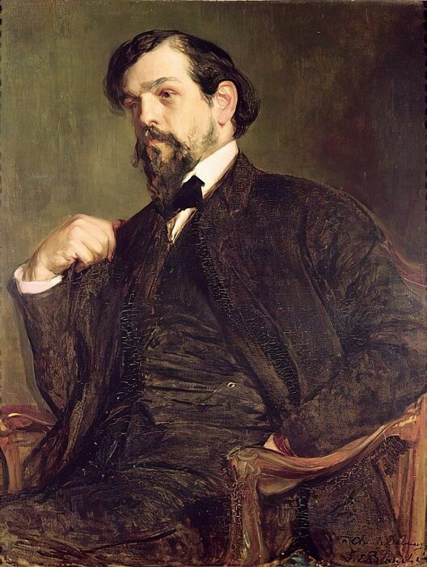

Debussy
Claude Debussy bol francúzsky skladateľ, ktorý je považovaný za jedného z najdôležitejších predstaviteľov impresionizmu v hudbe. Narodil sa 22. augusta 1862 v Saint-Germain-en-Laye a jeho tvorba zásadne ovplyvnila hudobný jazyk 20. storočia. Debussy bol inovatívny skladateľ, ktorý sa vyhýbal tradičným harmonickým schémam a vytváral novú zvukovú atmosféru pomocou nezvyčajných intervalov, tónov a rytmov. Jeho najznámejšie diela zahŕňajú klavírne skladby ako Clair de Lune (Mesačný svit), Arabesque a Prélude à l'après-midi d'un faune, orchestrálne skladby ako La Mer (More) a Images, a jeho opera Pélleas et Mélisande. Debussyho hudba je charakteristická jemnými, plynulými zmenami tonality, nejednoznačnými harmóniami a bohatým, farebným zvukom, ktorý vytvára pocit svetla, vzdušnosti a pohybu. Debussy mal veľký vplyv na vývoj hudby 20. storočia a jeho práca viedla k rozvoju nových techník, ako je modálnosť a pentatonika, ktoré sa stali základom pre modernú hudbu. Napriek tomu, že sa označuje za predstaviteľa impresionizmu, jeho hudba sa často vymyká tejto škatulke, keďže mal vlastný, veľmi osobitý prístup k skladbe. Zomrel 25. marca 1918 v Paríži po dlhodobých problémoch so zdravím, ale jeho diela stále zostávajú neodmysliteľnou súčasťou klasického hudobného repertoáru a sú často interpretované po celom svete.
Späť na hlavnú stránku